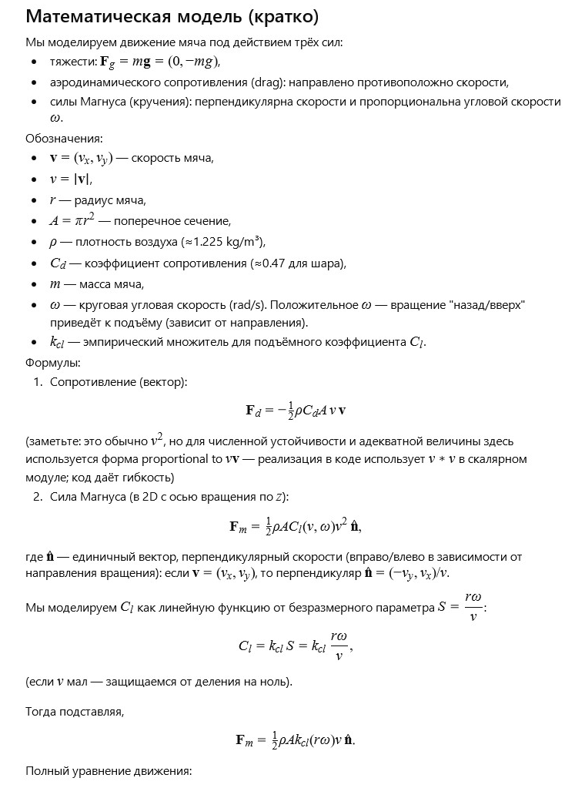
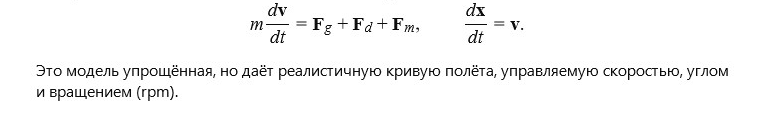

← Вернуться к оглавлению


Симулятор: кручёный мяч (Magnus)
Начальная скорость (м/с)
30
Угол броска (°)
20
Вращение (RPM) — оборотов в минуту
1500
Радиус мяча (м)
0.11
Масса мяча (кг)
0.43
Коэфф. сопротивления C
d
0.47
k
cl
(эмпирический)
1.0
Плотность воздуха (kg/m³)
1.225
Старт
Пауза
Сброс
t =
0.00
с
x =
0.00
м, y =
0.00
м
vx =
0.00
м/с, vy =
0.00
м/с
rpm =
1500
, ω =
157.08
рад/с
← Вернуться к оглавлению